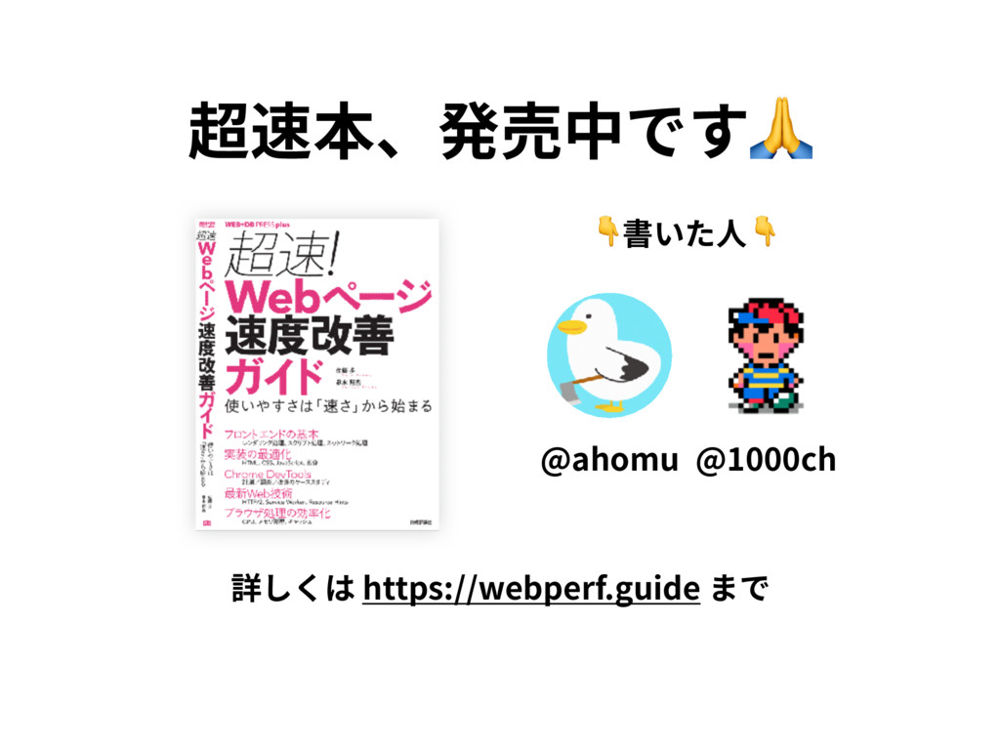

<html>
<head>
  <meta charset="utf-8">
  <title>メディア事業に期待される Web の役割とポジショニング</title>
  <link rel="stylesheet" href="./dist/talkie.css">
  <link rel="stylesheet" href="./dist/talkie.theme-default.css">
  <link rel="stylesheet" href="https://cdnjs.cloudflare.com/ajax/libs/highlight.js/9.12.0/styles/monokai-sublime.min.css">
  <meta property="og:url" content="http://s.aho.mu/170518-a11y_festival/">
  <meta property="og:site_name" content="s.aho.mu - 発表資料集">
  <meta property="og:author" content="ahomu">
  <meta name="twitter:url" content="http://s.aho.mu/170518-a11y_festival/">
  <meta name="twitter:site" content="@ahomu">
  <meta property="og:image" content="http://s.aho.mu/170518-a11y_festival/img/photo-seminar.jpg">
  <meta name="twitter:image" content="http://s.aho.mu/170518-a11y_festival/img/photo-seminar.jpg">
  <meta property="og:type" content="article">
  <meta property="og:title" content="メディア事業に期待される Web の役割とポジショニング">
  <meta property="og:description" content="Bonfire Frontend #1(2018年3月26日)での発表資料">
  <meta name="twitter:card" content="summary_image">
  <meta name="twitter:title" content="メディア事業に期待される Web の役割とポジショニング">
  <meta name="twitter:description" content="Bonfire Frontend #1(2018年3月26日)での発表資料">
  <meta name="description" content="Bonfire Frontend #1(2018年3月26日)での発表資料">
  <style>
    /* base overriding */
    [layout] {
      /*color: #ffffff;*/
      font-family: "NotoSansCJKjp-Regular","Open Sans","Hiragino Kaku Gothic ProN","Meiryo",sans-serif;
    }
    [layout] h1, [layout] h2, [layout] h3, [layout] h4, [layout] h5, [layout] h6 {
      font-weight: bold;
      font-family: "NotoSansCJKjp-Regular","Open Sans","Hiragino Kaku Gothic ProN","Meiryo",sans-serif;
    }

    /* layout=profile */
    [layout=profile] > *:nth-child(1) {
      flex: 1 !important;
      text-align: center;
    }
    [layout=profile] > *:nth-child(1) img {
      border-radius: 50%;
    }
    [layout=profile] > *:nth-child(1) strong {
      font-size: 3em;
    }
    [layout=profile] > *:nth-child(2) {
      flex: 2.5 !important;
    }
    [layout=profile] > *:nth-child(2) .hljs {
      font-size: 1em;
      font-family: Consolas, Monaco,'Andale Mono',monospace;
    }

    [layout=title] > h1 {
      font-size: 3.5em;
      line-height: 1.3;
    }
    [layout=embed] iframe {
      width: 100vw !important;
      height: 100vh !important;
    }
  </style>
</head>
<body>

<!-- put your slides -->

<script layout="title" h-left type="text/x-markdown">
<style></style>
# メディア事業に期待される<br>Web の役割とポジショニング

[Bonfire Frontend #1](https://yj-meetup.connpass.com/event/58718/) / 2018年3月26日<br>
by [@ahomu](https://aho.mu) - CyberAgent, Inc.

</script>

<script layout="profile" horizontal invert type="text/x-markdown">
<div>
  
  <strong>@ahomu</strong>
</div>

```json
{
  "@context": "http://schema.org",
  "@type": "Person",
  "name": "Ayumu Sato",
  "alternateName": "あほむ",
  "url": "https://aho.mu",
  "jobTitle": "Web Developer",
  "worksFor": "CyberAgent, Inc.",
  "workLocation": "名古屋市渋谷区",
  "sameAs": [
    "https://twitter.com/ahomu",
    "https://github.com/ahomu"
  ]
}
```
</script>

<script layout invert type="text/x-markdown">
<a href="https://webperf.guide" target="_blank">
  
</a>
</script>

<script layout type="text/x-markdown">
>Webフロントエンドはここ数年で急激な進化を果たし、かつてのHTML・CSS・jQueryだけの守備範囲を超えて、より広範な知識が求められるようになりました

via. [イベントの connpass ページ](https://yj-meetup.connpass.com/event/58718/)
</script>

<script layout="bullets" invert type="text/x-markdown">
## 作っているものが違う

- ブログメディア
- インターネットテレビ局
- EC サイト
- ブラウザゲーム
- その他 toC 向け Web サービス全般
</script>

<script layout="bullets" invert type="text/x-markdown">
## ロールモデルも違う

- React で魂震える奴
- CSS 緑本印税収入奴
- アクセシビリティおじさん(社内)
- サーバー書けるよ Node.js マン
- インタラクティブコンテンツ職人
</script>

<!-- =============================================================================================================== -->

<script layout="title" invert type="text/x-markdown">
## **社内**的なフロントエンド**事情**
</script>

<script layout="bullets" type="text/x-markdown">
## 社内の体制とか雰囲気

- Web、iOS、Android、Backend、Design の完全分業
- マネジメントツリーも上記の分類で区切られる
- コラボレーションは現場依存で、個々は専門性を追求
- 約15プロジェクトに計60名弱 (※人数は Prj 規模に比例)
- 運用部門と開発部門、みたいな役割の分類はない
</script>

<script layout="bullets" type="text/x-markdown">
## 社内フロントエンドの変遷

- 2012年頃
  - いわゆる HTML/CSS コーダーな役割に毛が生えたくらい
  - 同時に、jQuery → Backbone とか Grunt くらいの頃
- 2015年頃
  - モダンなライブラリが社内に普及し、Web アプリ化の流れ
  - 自動化、テストなど近代的な開発の様式も完全に浸透
- 2018年現在
  - SSR や BFF をこじらせて Node.js やインフラ方面が台頭
  - 動画や音楽などの専門性の需要も高まるが人手不足
</script>

<script layout="bullets" type="text/x-markdown">
## 開発的な周辺状況の変化

- トラディショナルな Web アプリケーションサーバの淘汰
- Backend は Native App の隆盛もあって API の提供が主
- HTML を配信するのは、なんにせよ Web の仕事になる
- よってホントはフロントエンドというか **「Web」**
</script>

<script layout="bullets" type="text/x-markdown">
## 技術の境界 → 機能の境界

- ｢ブラウザで動くものをつくる = フロントエンド｣ ではない
- システムの **｢Web 用の機能全般をつくる = フロントエンド｣**
- 昔から ｢web サーバもフロントエンド｣ って吹いてたよ俺は!!
</script>

<script layout="bullets" type="text/x-markdown">
- **Web Technology**
- **GUI Programming**
- <span style="opacity: 0.8">Server Programming</span>
- <span style="opacity: 0.6">System Architecture</span>
- <span style="opacity: 0.6">UI/Visual Design</span>
- <span style="opacity: 0.4">Interaction/Animation Design</span>
- <span style="opacity: 0.7">**Performance**</span>
- <span style="opacity: 0.6">**Accessibility**</span>
- <span style="opacity: 0.3">Security/Privacy</span>
- <span style="opacity: 0.5">Search Engine</span>
</script>

<script layout="bullets" type="text/x-markdown">
## 自分のフロントエンド像

- Web UI にまつわる機能を実装するひと
- 環境の多様性をふまえて最適なカタチで提供するひと
- テクノロジーとデザインの中間で、最終成果物を担うひと

<small>via. [2014年](https://speakerdeck.com/ahomu/hurontoendofalsesukirumatuputoyu-cheng-falsehanasi)、[2016年](https://speakerdeck.com/ahomu/web-hurontoendodeshi-shi-wositegofan-wooisikushi-beruhua) のスライド</small>
</script>

<script layout="bullets" type="text/x-markdown">
## 現状を振り返ってみると...

 - 扱うテクノロジーの領域が広がったのは良い
 - その分、ほかの領域が割を喰ってないだろうか...?
 - Web フロントエンドの多様化と分断を感じる
 - もっと色々いたような気もするんだけどなぁ(個人の感想)
</script>

<!-- =============================================================================================================== -->

<script layout="title" invert type="text/x-markdown">
## メディア事業に**期待**される<br>**Web** フロントエンド
</script>

<script layout="bullets" type="text/x-markdown">
## (うちで)いま起きていること

- 課題領域の広がり
  - 動画配信、リアルタイム性、大規模化 etc...
  - **多様な技術課題への対応と追従**が求められる
- 公共性の高まり
  - [インターネットテレビ局の開設、マスメディア化のビジョン](https://jp.techcrunch.com/2017/10/27/cyberagent-financial-results/)
  - マス = **多様な利用環境を想定した品質**が求められる
</script>

<script layout="bullets" type="text/x-markdown">
## フロントエンドができること

- 多様な技術課題への対応と追従
  - ビジネスゴールに対して必要な要件を満たすもの
  - 投資が必要な一方、粛々と果たされる（はず）
- **多様な利用環境を想定した品質**
  - クライアントサイドの本質に関わること
  - プロダクトの価値を最大化するもの
</script>

<script layout="bullets" type="text/x-markdown">
## こういうのを無くしたい

- ページがいつまでも開かない（回線）
- 開いたけどスクロールが重すぎる（端末性能）
- キーボードで操作できない（入力機器）
- どこが操作できるのか分からない（認知）
- スクリーンリーダーで読めない（障害の有無）
</script>

<script layout="bullets" type="text/x-markdown">
## 評価上げてくぞ!!

- 運用中のプロダクトを磨く時間のほうが本来長い
- テクノロジーで武勇を見せるのにも限界がある
- 外向きの品質を、我々の仕事として再発見する
- 個々人の強み、キャリアの可能性を拡げたい
</script>

<script layout="title" invert type="text/x-markdown">
## まとめ
</script>

<script layout="bullets" invert type="text/x-markdown">
## メディア事業な社内的には

- テクノロジー領域の広がりを歓迎する一方、不安も感じる
- **｢マスメディアのクライアントサイド｣** として理想を再構築中
- フロントエンド、みんなちがってみんないい (*´▽`)
</script>

<script layout="bullets" invert type="text/x-markdown">
## 今後

- ｢フロントエンドできます｣ では、ほぼ何も説明できていない
- 広い領域の中で ｢何を実現できるのか｣ を個々人に示してほしい
- 日々をテクノロジーに支配されてると失念しそうで心配
- クライアントサイドは絶対に技術革新あるから準備してこ
</script>

<script layout="title" invert type="text/x-markdown">
## Cheers! 🍻

<small>CyberAgent とか AbemaTV に興味ある方はお気軽に！</small>
</script>

<script src="//cdnjs.cloudflare.com/ajax/libs/highlight.js/9.12.0/highlight.min.js"></script>
<script src="https://cdn.polyfill.io/v2/polyfill.js?features=default-3.4,Array.prototype.includes"></script>
<script src="./dist/talkie.js"></script>
</body>
</html>
